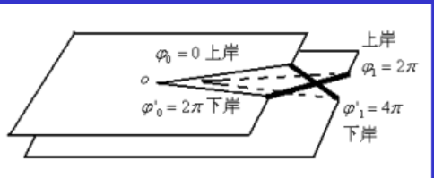

1 复变函数论
1.1 复数及复数计算
1.4 解析函数
解析:f(z)在z_0邻域上处处可导，即f(z)在z_0处解析
解析函数:f(z)在区域B上处处解析。
调和函数:f=u+iv在区域B上解析。则u和v是B上的调和函数
也就是满足
由一个调和函数确定解析函数:
运用C-R条件确定
$dv=-\frac{\partial u}{\partial y}dx+\frac{\partial u}{\partial x}dy$也就是一个全微分
之后3种积分法积出v
①曲线积分:
②凑全微分
③不定积分法
P.S 见数学分析
解题步骤:
1.对给定函数验证是调和函数
2.利用C-R条件求出4个偏导，记住C-R得到的那两个偏导
3.dv=C-R条件得到的那两个偏导分别乘dx dy
4.积分得到v
路径无关条件:对于Qdx+Pdy Q对y求导=P对x求导
1.4.1 解析函数的性质
1.u(x,y)=C1 v(x,y)=C2 (C1,C2为常数)。两组曲线簇正交
实际上,C-R条件相乘。得到$\triangledown u+\triangledown v=0$
说明两梯度正交。而两梯度是曲线簇的法向量。于是两曲线簇正交
1.5 平面标量场
例:
若u(x,y)=C1为电势(这样的解析函数称为复势)，等势线簇。则v(x,y)=C2为电场线簇。且对v沿某路径积分能得到通量。因此v也叫通量函数
1.6 多值函数
如:$\omega=\sqrt z $可得到
$\omega_1=\sqrt{|Z|}e^{i(arg z)/2}\\ \omega_2=\sqrt{|Z|}e^{i(arg z)/2+i\pi}=-\omega_1$
称为两个单值分支
性质:从某点z_0出发，沿包围z=0的闭合路径一圈能够进入另一个单值分支。（不包围则不变）
支点:绕该点一圈w不复原。且该点单值分支函数值相同
n-1阶支点:绕n圈w函数值复原.如z=0是1阶支点(z=无穷大也是1阶支点)
1.6.1 黎曼面:
(假设绕的第一圈和第二圈在两个复平面上运行)

2 复变函数积分
2.1 复变函数的积分
$f(z)=u(x,y)+iv(x,y)$
1.路积分 将一条路径分段后积分
复变函数的积分与路径有关
2.2 柯西定理
2.2.1 单连通区域的柯西定理
2.2.2 复连通区域的柯西定理
l_i为区域内边界线,l为外边界线
f(z)若在单连通域B上解析，则沿B上任一路径l的积分值与路径无关
2.3 不定积分
由柯西定理知f(z)若在单连通域B上解析，则沿B上任一路径l的积分值与路径无关.于是起点z_0确定后，到终点z的积分能够形成函数
性质:
①F(z)在B上解析
②F’(z)=f(z)
③路积分值=原函数改变量
2.4 柯西公式
若f(z)在连通区域$\overline{B}$,l为区域$\overline{B}的边界$,$\alpha$为区域内任意一点
其将任一点的函数值用沿边界线l的积分表示了出来
复连通域上的柯西公式仍然成立。l为所有边界线，且均取正方形
性质、推论:
①解析函数可以任意求导多次
②模数定理:f(z)在某个闭区域上解析，|f(z)|只能在边界线上取得极大值
③刘维尔定理:f(z)在全平面上解析，f(z)只能为常数
3 幂级数展开
3.1 复数项级数
柯西收敛判定：
级数各项模的和的级数收敛，则级数绝对收敛
两个绝对收敛的级数，逐项相乘仍然收敛，且和=AB
一致收敛:
N与z无关
对给定小正数$\epsilon$必有N(z)存在,n>N(z)时上式成立
性质:
1.连续保持:若每一项都是连续函数,和也是连续函数
2.积分:可以逐项积分
3.求导：可以逐项求导。且求导结果在任意子闭区域内一致收敛
如果$|w_k(z)|\le m_k$ $\sum m_k$为正的常数项级数，且收敛。则 wk绝对且一致收敛
3.2 幂级数
收敛判断:
1.求收敛半径$R=\lim_{k->\infty}|\frac{a_k}{a_{k+1}}|$ 若$|z-z_0|<R$则绝对收敛
2.对于正项级数根植判断:每项根号k后，k取极限，若<1则绝对收敛
3.逐项积分\逐项求导不改变收敛半径
3.3 泰勒级数展开
留数定理将回路积分归结为被积函数在回路所围区域上奇点留数的和
对于1阶极点z_0
$Res f(z_0)=\lim_{z->z_0}(z-z_0)\frac{P(z)}{Q(z)}=\frac{P(z_0)}{Q’(z_0)}$(计算留数)
$\lim_{z->z_0}(z-z_0)^mf(z)=非0有限值$(判断极点的阶)
4.2 应用留数定理计算实变函数积分
4.2.1 三角函数有理式型
step1:作变换$z=e^{ix}$.x从0到2pi变化。则z沿逆时针绕单位圆走一圈
step2:利用第一章的变换。把sin\cos换成z表示：
$cos x=\frac{1}{2}(z+z^{-1})$
$sin x=\frac{1}{2i}(z-z^{-1})$
$dx=\frac{1}{iz}dz$
step3:求积分
$\oint_{|z|=1}R(\frac{z+z^{-1}}{2},\frac{z-z^{-1}}{2i})dz/iz$
利用留数定理积分步骤:
1.找出极点
2.判断每个极点是否在回路内，不在的不管
3.对在回路内的极点利用留数定理积分
4.2.2 正负无穷的积分
4.2.3 0到无穷大与三角函数积分
约当定理:
$C_R$为上半圆。z->无穷大时F(z)一致的->0
则
于是又可得到